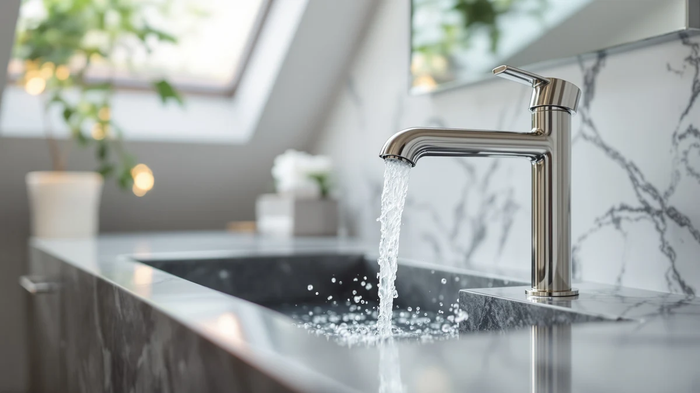

How to Clean Nickel Bathroom Faucets: Complete Guide (2026)
Prices and picks verified as of October 2026. Independent, reader-supported reviews.


Things to Know Before You Buy
- Nickel needs diluted vinegar, not full strength. A 1:1 mix of water and white vinegar lifts hard water deposits from a nickel bathroom faucet in 5 to 10 minutes; the undiluted soak that chrome tolerates for 20 minutes can dull nickel plating left on that long.
- Brushed nickel has a grain. Wipe and dry along the brushed lines rather than across them, or the cleaning itself leaves streaks that catch the light.
- Ammonia and abrasives dull nickel faster than almost any cleaner. Skip ammonia-based glass cleaners and anything labeled scouring; either one strips the microscopic texture that gives brushed nickel its matte look.
- The aerator causes most flow complaints. A weak or sputtering stream usually traces back to a clogged screen at the spout tip, not the valve or your home's water pressure.
Knowing how to clean nickel bathroom faucets starts with treating the finish differently than chrome, since the brushed surface and plated metal underneath react to acid and abrasives faster. Hard water leaves the same chalky white rings around the spout and base, soap scum builds a hazy film across the handles, and the aerator screen inside the spout tip collects mineral grit until the stream weakens or sprays sideways. None of that calls for a specialist or a product you don't already keep under the sink.
The full routine breaks into a soap wash for everyday grime, a diluted vinegar treatment for mineral deposits, an aerator rinse that restores water pressure, and a final buff along the brushed grain that keeps the finish from streaking. Budget about 25 minutes for a nickel bathroom faucet, and skip the undiluted vinegar soak you'd use on chrome, since full-strength acid left on nickel too long dulls the plating instead of simply lifting mineral deposits. One habit matters more than any product: dry the faucet along the direction of the brushed lines, because wiping across the grain leaves visible streaks that a polished finish would never show.
What You'll Need
- Supplies: white vinegar, mild dish soap, and baking soda
- Tools: a microfiber cloth, a soft-bristled toothbrush, and a small bowl for diluting the vinegar
Step 1: Wipe Away Soap Scum and Surface Grime
Start every nickel bathroom faucet cleaning with a plain water rinse, since loose dust and toothpaste splatter grind into fine scratches if you go straight for a scrub. Wet a microfiber cloth with warm water, add two or three drops of mild dish soap, and wipe the spout, handles, and base following the direction of the brushed lines instead of circles, which cut across the grain and leave crosswise streaks.
Pay extra attention to the seam where the base meets the sink deck and the grooves around the handle levers. Soap scum and skin oils collect there first and dull the brushed texture long before hard water spots show up. A second pass with a clean, damp cloth removes the soap residue so it doesn't dry into a hazy film.
Step 2: Treat Hard Water Spots With a Diluted Vinegar Solution
Hard water leaves calcium and lime deposits that soap alone won't touch, but nickel reacts to acid more than chrome does, so skip the undiluted soak you'd use on a chrome fixture. Mix equal parts white vinegar and warm water in a small bowl, soak a rag in the solution, and wrap it directly around the crusted areas for 5 to 10 minutes, long enough to break the mineral bonds without stripping the plating.
Set a timer instead of guessing, since leaving diluted vinegar on a nickel bathroom faucet much past 10 minutes is what turns a cleaning session into a dulled finish. For a faucet that hasn't been cleaned in months, repeat the wrap once rather than extending the first soak, and rinse between applications so fresh acid keeps doing the work instead of sitting inert.
Step 3: Scrub Buildup With a Soft Brush and Baking Soda Paste
Once the diluted vinegar has softened the deposits on a nickel bathroom faucet, a soft-bristled toothbrush reaches into the seams a cloth can't. Scrub the base ring, the collar under each handle, and the threads around the spout tip using light pressure and short strokes that follow the brushed lines. Nickel plating scratches almost as easily as chrome, so skip steel wool, scouring powder, or anything described as abrasive.
If crusty buildup remains after the toothbrush pass, mix baking soda with a few drops of water into a paste and work it into the spot with the same brush, still moving with the grain. The mild abrasion lifts what the vinegar loosened without cutting new scratches into the finish. Unscrew the aerator at the spout tip if the stream has been weak or uneven, and drop it into the diluted vinegar solution for the same 5 to 10 minutes so the mesh screen clears separately.
Step 4: Rinse the Faucet and Flush the Aerator
Turn the water on and let it run over the base, handles, and spout of the nickel bathroom faucet for a full 30 seconds, moving the handles through their full range so water reaches the seams you scrubbed. This clears out grit the toothbrush loosened but didn't fully remove, which would otherwise sit against the finish and cause micro-scratches over time.
Reattach the aerator, then run the water again briefly to flush out any remaining vinegar smell and confirm the stream runs straight and full instead of sputtering or spraying sideways. A weak stream after reassembly usually means the aerator threads aren't seated, not that the cleaning failed.
Step 5: Dry and Buff Along the Grain to Restore the Shine
Brushed nickel hides water spots better than polished chrome, but it still shows streaks if you dry it the wrong way. Wipe every surface immediately with a clean, dry microfiber cloth, working in the direction of the brushed lines rather than small circles, which push water into the texture instead of lifting it off.
This 30-second step keeps a nickel bathroom faucet looking new between cleanings. Skip it, and the same minerals you spent 10 minutes dissolving will redeposit as the water evaporates on its own. Repeat the full cleaning monthly in hard water areas, or every six to eight weeks otherwise, and wipe the faucet down with a dry cloth after normal use to stretch the interval further.
Common Mistakes to Avoid
The most common mistake is treating nickel like chrome and leaving undiluted vinegar on the finish for 15 or 20 minutes. Nickel plating reacts to acid faster than chrome does, and a long undiluted soak dulls the surface instead of lifting mineral deposits. Stick to a 1:1 water and vinegar mix and a 5 to 10 minute contact time no matter how stubborn the buildup looks.
Scrubbing across the brushed grain ranks second. Circular motions and side-to-side scrubbing cut against the microscopic lines that give brushed nickel its matte texture, leaving crosswise streaks that catch the light from certain angles. Wipe and scrub in the same direction as the grain every time, during both cleaning and drying.
Reaching for an ammonia-based glass cleaner is a third habit worth breaking. Ammonia strips the texture on brushed nickel faster than most common cleaners, turning a matte finish patchy and uneven within a few applications. Dish soap and diluted vinegar handle everything a nickel bathroom faucet needs.
Finally, people skip the aerator and blame low water pressure on the plumbing. The screen at the spout tip is the first place mineral deposits collect, and a sputtering or sideways stream usually clears up the moment that screen gets its own short vinegar soak instead of a new faucet.
Our Top Picks
If your current nickel bathroom faucet has pitted or dulled past what cleaning can fix, these three replacements hold up well to the same routine above.

Editor’s Pick
WOWOW Bathroom Faucet 1 Handle
WOWOW's 304 stainless steel body and dual aerators give you a full-flow and a water-saving option on the same nickel bathroom faucet, so you're not locked into one flow rate the way you are with most single-aerator faucets.
$39.99
Check Price on Amazon
Best Value
Moen Brandtford Brushed Nickel Two-Handle
The included rough-in valve means you're not sourcing a separate valve kit before installation, which closes much of the price gap with cheaper single-piece faucets once total installed cost is factored in.
$269.75
Check Price on Amazon
Premium Choice
Kablle Bathroom Faucet with Pull
Kablle's pull-down sprayer head adds a second spray mode that basic single-handle nickel faucets don't offer, useful for rinsing the sink itself during the cleaning routine above.
$26.73
Check Price on AmazonFrequently Asked Questions
What is the best way to clean a nickel bathroom faucet?
Does vinegar damage nickel faucets?
How do you remove hard water stains from a nickel faucet without ruining the finish?
How often should you clean a nickel bathroom faucet?
Why does my brushed nickel faucet look streaky after cleaning?
Verdict
Knowing how to clean nickel bathroom faucets comes down to treating the finish more carefully than chrome: soap for everyday grime, a 5 to 10 minute soak in diluted vinegar for hard water deposits, and a dry buff that always follows the brushed grain. Nickel reacts to acid faster than chrome does, so the undiluted soak and long contact times that work on a chrome fixture will dull a nickel one instead of safely loosening mineral buildup. Budget about 25 minutes for the full routine, run it monthly in hard water areas, and don't skip the aerator soak if the stream has started to sputter. The habit that matters most is directional: wipe and dry with the grain, not across it, since that's what keeps brushed nickel looking matte instead of streaky. And if your current fixture has pitted past what cleaning can fix, the WOWOW nickel bathroom faucet from our picks above replaces it with dual aerators that cover both water-saving and full-flow use.